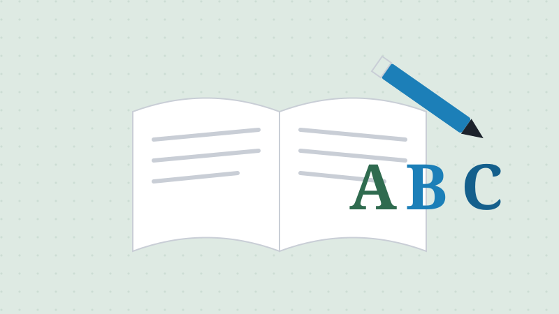

Reading & Writing Test: Sample Vocabulary List
Updated July 2026 · 3 min read · Ciudadano Ready Team

The English portion of the naturalization test has three parts: speaking, reading, and writing. Speaking is evaluated through your conversation with the officer during the interview: there's no separate speaking quiz. Reading and writing work differently, and they're the two parts you can actually study vocabulary for ahead of time.
How the reading and writing tests work
For the reading test, the officer shows you up to three sentences and you need to read just one of them correctly aloud to pass. For the writing test, the officer dictates up to three sentences and you need to write just one of them correctly to pass. Both tests draw from official USCIS vocabulary lists focused on civics and history topics, and importantly, the reading list and the writing list aren't identical, so it's worth reviewing both rather than assuming they overlap completely.
Sample vocabulary categories
Here's a sample of the kinds of words and phrases that show up across the official lists, grouped the way USCIS groups them:
- People: Washington
- Adams
- Lincoln
- Civics: American flag
- Bill of Rights
- capital
- citizen
- Congress
- government
- President
- Senators
- White House
- Places: America
- United States
- Holidays: Presidents' Day
- Memorial Day
- Flag Day
- Independence Day
- Labor Day
- Columbus Day
- Thanksgiving
- Question words: How
- What
- When
- Where
- Who
- Why
This is a sample, not the complete official list: USCIS publishes the full Reading Vocabulary and Writing Vocabulary documents directly, and those are the ones to study from since they're kept current.
How to actually practice
Reading and writing a handful of practice sentences out loud with a friend or family member, using the real vocabulary categories above, works better than just memorizing word lists in isolation; you're training the same skill the test actually checks: reading a full sentence and understanding it well enough to write it back correctly.
This article is for general information only and is not legal advice. For guidance on your specific case, contact a licensed immigration attorney.